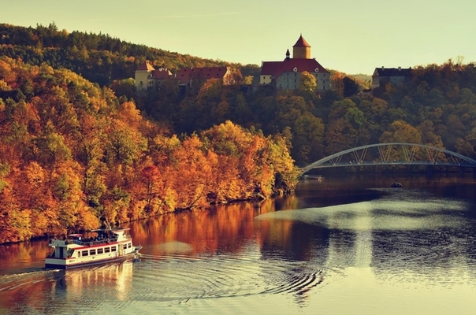
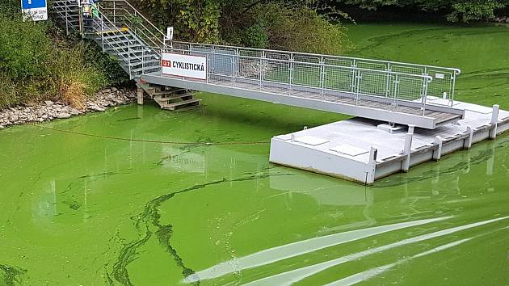

Vítejte na stránkách o kvalitě vody na Brněnské přehradě v letech 2018 a 2019,
na této stránce najdete všechny podstatné informace o znečištění přehrady v letech 2018 a 2019. Data pochází od Povodí Moravy s. p. a Krajské hygienické stanice Jihomoravského kraje, čímž je zajištěna jejich správnost a aktuálnost. Mapy a tabulky, které se nacházejí v jednotlivých tématických sekcích byly vypracovány v rámci bakalářské práce Bc. Tomáše Hanouska. Jednotlivé mapy ukazují vývoj a průběh rozšíření sinic, potažmo faktorů, které zvýšený výskyt způsobují jako je obsah chlorofylu a, množství rozpuštěného kyslíku ve vodě, průhlednost vody a v neposlední řadě teplota vody. Tabulky uvádějí naměřené hodnoty v daných místech. Přesný postup sběru in-situ dat a vypracování map je popsán v sekci Metodika.
Brněnská přehrada (dříve pojmenovaná Kníničská přehrada podle zatopené obce Kníničky) se nachází na řece Svratce, přesněji na 56,19 km jejího toku, v blízkosti města Brna v Jihomoravském kraji. Jedná se o nádrž s krátkou dobou zadržení vody, přibližně 1 měsíc. Hlavními důvody k vybudování přehrady v těchto místech byly povodně, které pravidelně postihovaly obce podél řeky a regulace vodního toku, aby během suchého období, kdy se snížil průtok ve Svratce, bylo dostatek vody pro zásobování města Brna užitkovou vodou. Na západním břehu se nad přehradou tyčí hrad Veveří, který je symbolem přehrady poskytuje výhledy na celou její plochu. Pod hradem se rovněž nachází lávka pro pěší a cyklisty. Na přehradě rovněž funguje v letních měsících lodní doprava, která vám umožňuje zhlédnout krásy nádrže z úplně jiného pohledu.
Problematika vodního květu
Vodní květ se na hladině Brněnské nádrže objevuje již od jejího vzniku, ale až do 90. let 20. století se tomuto problému nevěnovala pozornost. V této době dominantní postavení převzala sinice Microcystis aeruginosa, která tvoří na hladině zelený povlak a likviduje jím biodiverzitu v nádrži. Proto se začalo uvažovat o přijetí protiopatřeních, která by udržela vodu čistou. V roce 2008 se přistoupilo k opatřením na vodní nádrži ve snaze zabránit opakujícímu se vodnímu květu, kdy byla přehrada upuštěna o 8 metrů. Na obnažené břehy se aplikovalo vápno, odbagrovala se vrstva sedimentů a postavily se provzdušňovací věže. Díky těmto a mnoha dalším opatřením se od roku 2009 až do roku 2017 vodní květ ve významném množství na nádrži neobjevil. Změna přišla v roce 2018, kdy bylo celé jaro srážkově podprůměrné a postupně klesal průtok ve Svratce. Nakonec se muselo přistoupit ke snížení odtoku z přehrady, což zapříčinilo, že doba zadržení vody, která je obvykle jeden měsíc, se natáhla až na 75 dní. Voda se za tu dobou stačila ohřát na vyšší teplotu, což pomohlo sinicím v rozmnožení. Druhým faktorem bylo opožděné vypouštění síranu železitého, který na přítoku Svratky do nádrže sráží fosfor. To začalo až na konci května, zatímco v předchozích letech se začalo již na konci dubna. V roce 2019 se situace neopakovala a voda v nádrži si udržela dobrou kvalitu.